Build Ethos Integration
Build Your Integration Requirements
Use this publication as an aid for selecting APIs for your integration project.
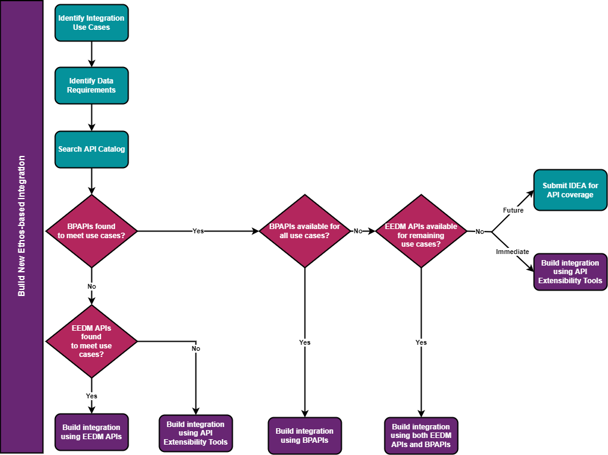
Which type of API suits your integration requirements?
EEDM APIs: APIs that are built based on the Ethos Data Model and expose functionality and reference data in the Ellucian authoritative source applications (Banner, Colleague and CRM). The EEDM APIs expose data and business rules more aligned to general concepts in the higher education domain instead of representing the data definition and business rules of the specific authoritative source system. Learn more about EEDM by clicking here.
BPAPIs: APIs that expose data and operations based on how administrative users execute business processes. These APIs are designed to incorporate data as it is represented in the application and serve a specific business process. The business logic within the source system is the same as that used by the API.
- Banner Ethos API Extensibility
- Banner Business Process API Extensibility
- Colleague Ethos API Extensibility
- Ellucian Data Access data model extensibility for GraphQL integrations
Comparison of EEDM APIs and BPAPIs
The comparison outlines similarities and differences between EEDM APIs and BPAPIs.
The key difference between Business Process APIs (BPAPIs) and Ellucian Ethos Data Model (EEDM) APIs is that BPAPIs will not be required to follow a common data model across systems. The table below outlines some of the differences and similarities.
| EEDM API | BPAPI |
|---|---|
| API follows a common Ethos Data Model schema. | API does not follow a common data model. |
| Full CRUD (GET, POST, PUT, DELETE) is offered on specific APIs. | GET, POST and PUT is supported if administrative page has data maintenance. DELETE is supported for specific use cases. |
| Ethos proxy request is supported. | Ethos proxy request is supported. |
| API utilizes permissions based on roles assigned to an API user. | A user needs to be set up with access to the administrative page to use the API. Colleague also requires role permissions to be configured for the user. |
| Data privacy is supported. | Data privacy is supported. |
| Extensibility is supported. | Extended fields exposed using Banner's Supplemental Data Engine (SDE) are supported. Initial release of Banner business process APIs support only GET on SDE fields. Extensibility is not supported by Colleague. |
| Semantic versioning is supported. | Semantic versioning is supported. |
| Filters are supported. Refer to OpenAPI documentation for filters available on specific APIs. | Filters are supported. Refer to OpenAPI documentation for filters available on specific APIs. |
| OpenAPI and lineage documents are published to documentation site as separate publications. | OpenAPI document published to documentation site includes the data lineage. |
| Bulk loading of data into Data Access available for Banner only. GraphQL queries on the data in Data Access supported by both Banner and Colleague. | Bulk loading of data into Data Access is not supported. Data available from BPAPIs cannot be queried using GraphQL service. |
| Resource change notifications are supported. | Business event change notifications are not currently supported. |
Find an API using EEDM data lineage
About this task
Procedure
- Click the API Catalog tile on the Doc site landing page.
- Click the appropriate tile for the needed API.
- Using the Search, locate the required API.
- Locate Schemas section of the API.
- Expand each schema to see the data lineage for each property.
Find an API using an administrative page
About this task
Use the API Catalog to find business process APIs that support an administrative page.
Procedure
- Go to the API Catalog.
- Enter the name of the administrative page in the search box and press enter. The search returns results from across the Documentation site.
- Limit the search results to only APIs by clicking a filter in the API Catalog in the left-hand filter panel.
- Search for other administrative pages by changing the name of the page in the search box and pressing enter. Leave the Category API Catalog selected to limit results to only APIs.
How To
How to determine when and who changed data with Banner BPAPIs
How to identify reference data to be used for Banner BPAPI POST/PUT transactions
You can use the Banner Business Process API (BPAPI) OpenAPI documentation to identify associated BPAPIs and retrieve information needed for POST/PUT transactions.
When executing a POST/PUT transaction to a BPAPI, you might need to identify reference data within another BPAPI for use in your transaction. Reference data is data defined in a related object in Banner to provide a list of valid choices for a property. To explain how to identify reference data, a sample use case is used for this demonstration.
Use Case
hold-information BPAPI when the hold type is not known. The hold type is the reference data that will be identified.- Navigate to the
hold-informationBPAPI in the API Catalog. - Navigate to the POST request schema for the
hold-informationBPAPI. - Locate a property that is indicative of a hold type, code, or value. In this example, the field you are looking for is
hlddCodewhich is the hold type in Banner. - Note the Lookup lineage reference object for the
hlddCode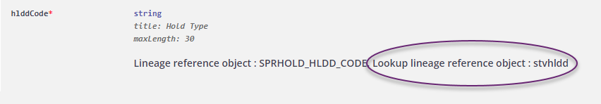
- Initiate a search for
stvhlddin the BPAPI Catalog. Thehold-type-codesBPAPI should be returned in the search. - Access the
hold-type-codesOpenAPI documentation. - Review the GET response schema for the
hold-type-codesBanner BPAPI. - Using your preferred API testing tool, initiate a GET request to the
hold-type-codesBPAPI to retrieve a list of the hold type codes contained within the STVHLDD table. Examine thehold-type-codesGET response to identify the appropriate hold type. - Perform a POST request to the
hold-informationBPAPI using the reference data found in thehold-type-codeBPAPI GET response.
Tips for Success
- Use Find an API using an administrative page or for more information about searching for APIs.
- Notice that multiple Lookup lineage reference objects can be listed in the schema. If there is more than one Lookup lineage reference object, a combination of configurations are used to determine the valid values.
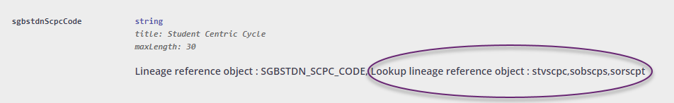
How to identify reference data to be used for EEDM API POST/PUT transactions
You can use the Ethos Data Model (EEDM) OpenAPI documentation to identify associated EEDM APIs and retrieve information needed for POST/PUT transactions.
When executing a POST/PUT transaction to an EEDM API, you might need to use other EEDM APIs to look up reference data for use in your transaction. Reference data is data defined in an Ethos Data Model Resource. To illustrate how to look up reference data, two sample use cases are provided.
Use Cases
admission-decisions API, when the admission application and the admission decision type are not known.
- Navigate to the API Catalog and search for the
admission-decisionsEEDM API. Use the catalog API Type filter to show only EEDM APIs: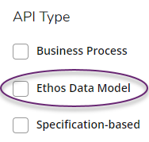
- Select the highest version of the
admission-decisionsAPI that is supported by Banner from the search results. The API documentation page will be displayed when the link is selected.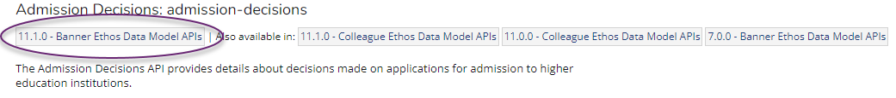
- Scroll to the 'Schemas' section and review the properties needed for a POST/PUT request. Required properties are indicated with a red asterisk.
- In this example,
application,decisionTypeanddecidedOnare required. BothapplicationanddecisionTyperequire a GUID to be used, which must be looked up if it isn't already known. - To look up reference GUID values, you must identify the EEDM APIs associated with them.
- To determine which EEDM APIs you need to use, expand the schema section of the API and locate the property. The EEDM API will be identified with x-lineageLookupReferenceObject.
- Using your preferred API testing tool, perform a GET request to
admission-applications(utilizing filters) to locate theadmission-applicationof interest. Note the GUID returned in theIDproperty for later use in the POST/PUT request. - Perform a GET request to
admission-decision-typesto retrieve a list of admission decision type codes. Note the GUID returned in theIDproperty of the decision type of interest for later use in the POST/PUT request. - Perform a POST/PUT request to the
admission-decisionsAPI, including the GUIDs identified foradmission-applicationsandadmission-decision-types, along with any other required properties.
Use Case 2: Create a vendor using the vendors API, when the person/organization ID (a required property) is not known. The assumption is that the vendor does not already exist.
- Navigate to the API Catalog and search for the
vendorsEEDM API. - Select the highest version of the
vendorsAPI that is supported by Banner from the search results. The API documentation page will be displayed when the link is selected. - Scroll to the 'Schemas' section and review the properties. Required properties are indicated with a red asterisk.
- In this example, only
vendorDetailis required. TheoneOfproperty requires a GUID for either a person or organization to be used, which must be looked up if it isn't already known. - Using your preferred API testing tool, perform a GET request to
personsororganizations(utilizing filters) to determine if a person/organization associated with the vendor of interest is present in the database. Multiple searches might be needed to narrow the search results. Note the GUID returned in theIDproperty for later use in the POST request. - If a person/organization is not found after filtering against
personsandorganizations, a new person/organization can be created using a POST request topersonsororganizations. Note the GUID returned in theIDproperty in either API for use in thevendorsPOST request. - To create a new vendor, complete a POST request to
vendorsusing theIDGUID noted for either the person or organization as thevendorDetail.person.idorvendorDetail.organization.id, along with any other necessary properties.
Tip for Success
For complex scenarios that include properties that are effective dated, administrative users responsible for managing those values should be contacted to determine the appropriate values to include (e.g. accounting string values, etc.). This will ensure these values are valid for the transaction date of your POST/PUT request.
How to synchronize ERP data to a third-party system using EEDM APIs
You can use EEDM APIs to synchronize data from Banner or Colleague to a third-party application.
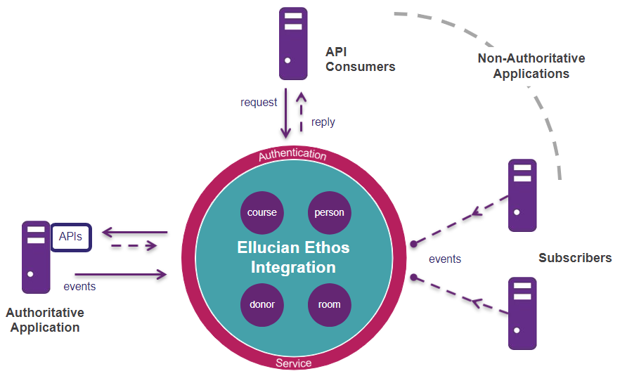
Synchronization keeps data up to date between the application consuming the data and the authoritative source system. One of the main strategies for synchronizing data using Ethos APIs relies on messages. Messages are how applications stay in sync on events that are occurring across campus data points: some sort of event has occurred, and one part of the system is letting another part know. Messaging is a key element of an integration model because the goal is to facilitate data synchronization among applications, as close to real time as possible, so the systems share the same view on the data.
Integration method (synchronous vs asynchronous)
Asynchronous message flow is where authoritative systems publish changes to data and interested parties might subscribe to data changes. This is also known as “publish/subscribe.” An application that owns an Ethos resource (the authoritative application) is responsible for publishing change notifications for changes related to that resource to Ethos Integration.
Synchronous message flow, also known as “request/reply,” is where a non-authoritative system makes a request of a resource. Ethos Integration determines what system is authoritative for that resource and routes the request to that system, which is responsible to reply to Ethos Integration, which then sends back to the requesting system.
Integration Examples
| Pattern | Description | Variant | Example | Suggestions for Use |
|---|---|---|---|---|
| Consuming data published by another application | Knowing when data of interest in another system has been created, updated, or deleted (for example, person name, contact or demographic data). | Asynchronous interaction |
|
When data changes on a periodic basis and an external system needs to be in-sync at all times. |
| On-demand retrieval of data from another application | Being able to query data in another system (for example, getting a list of deposits that are on a student's account, or a list of persons that meet some search criteria). | Synchronous interaction | Get housing applicant eligibility | When data is needed periodically, and the query criteria for the data change each time (i.e., different student). |
| Maintaining data in another application | Being able to create, update, delete data in another system (for example, a charge or a payment on a student's account). | Synchronous interaction | In a synchronous interaction, a client sends a request to a service, and receives an immediate reply. | When data is created, changed or removed in one system, and that change should be applied to other system as soon as possible. |
| Requesting a service of another application | Being able to get an external system to do something that might or might not result in the creation of data in that system (for example, tax calculation). | Synchronous (one of two possible responses) | Before requesting creation of purchase order or requisition, external system requests budget authorization for the purchase document. Response is either an authorized message or a not authorized message. Calling application must determine next steps based on message received. | When a process in one system is dependent upon the completion of a process in another system. |
Assumptions
- The appropriate software and software versions must be in place for the messaging enterprise.
- Installation and configuration of Banner/Colleague Ethos APIs has been completed to use Ethos Integration. (Connect applications to Ethos Integration)
- Ethos Integration has been set up to use Colleague/Banner Integration API as an authoritative source. (General procedures to set up an application in Ethos Integration)
- Standard messaging integration patterns are being used. (Use standard messaging integration patterns)
- Ellucian Ethos API standards related to change notifications are followed. (Ellucian Ethos change notification)
Listed below are several of the steps necessary to synchronize data between Banner or Colleague and a third-party system. There are different requirements for each ERP, so ERP-specific listings have been provided.
Note: Additional configurations not related to messaging might be required for Ethos Integration that are outside the scope of this document.
ERP Setup Instructions
| Title | Direction | Link |
|---|---|---|
| Messaging component considerations | This section provides considerations for deploying the software components that connect Banner or Colleague to Ellucian Ethos Integration. |
|
| Install the Ellucian Messaging Service | The Ellucian Messaging Service is message queuing software that decouples the event generator for Banner or Colleague from the software that processes the business events. |
|
| Install the Banner Event Publisher | The Banner Event Publisher (BEP) supports publishing notifications from Banner toEthos Integration. | Banner |
| Configure EDX | Colleague notifies Ellucian Ethos Integration about changes to data using Envision Data Exchange (EDX). | Colleague |
| Configure and deploy the Ellucian Message Adapter | The Ellucian Message Adapter publishes data changes from Banner or Colleague to Ellucian Ethos Integration. |
|
| Specify EMS settings | Define settings that the Ellucian Message Adapter uses to link the Ellucian Messaging Service with Banner or Colleague. |
|
| Ellucian Ethos change notification | Another essential component of the Ellucian Ethos Integration system is enabling Non Authoritative systems to be notified of changes to Data Model resources. This is enabled by Authoritative systems publishing Change Notification messages when Data Model resources change. | Publish Change Notifications |
| Retrieve change notifications | Applications that are configured as subscribers to resources must request the change notifications that Ellucian Ethos Integration stores for them. | Retrieve Change Notifications |
| Set up applications in Ethos Integration (single owner) | Create the Ethos Integration applications, and set up resources, subscriptions, proxy API requests, and GraphQL requests, in an environment where each resource is owned by just one application. | Set Up Applications (single owner) |
| Add subscriptions to an application (single owner) | Set up an application to access data in another application by subscribing to published data changes, in an environment where each resource is owned by just one application. | Add Subscriptions to an Application (single owner) |
| Set up applications in Ethos Integration (multiple owners) | Create the Ethos Integration applications, and set up resources, subscriptions, proxy API requests, and GraphQL requests, in an environment where some resources are owned by multiple applications. | Set Up Applications (multiple owners) |
| Add subscriptions to an application (multiple owners) | Set up an application to access data in another application by subscribing to published data changes, in an environment where some resources are owned by multiple applications. | Add Subscriptions to an Application (multiple owners) |
Synchronizing data
- Message Queue API: The Message Queue API is a public-facing API that allows subscribing applications to retrieve their change notifications.
- Publish API: The Publish API exposes a public-facing API that allows an authoritative system to publish changes to data using an HTTPS (non-RESTful) API. It accepts change notifications.
Tips for success
- Subscription filtering allows you to specify conditions in which you get a change notification added to a subscriber’s queue for a particular resource, reducing the size of subscription queues that can impact performance of the consume endpoint. (Example Subscription Filters)
- Third party systems should provide integration documentation for customers.
Quick Reference
Ethos-Enabled Integration Quick Reference
This Ethos-Enabled Integration Quick Reference provides a list of resources useful to a developer in building an Ethos Integration for an Ellucian application/project.
Prepare
| Type of Content | Description | Link to Page |
|---|---|---|
| Customer Center Ellucian Documentation | The Customer Center Ellucian Documentation site has a storehouse of information to assist in the development of your integration. If members of your development team do not have a Customer Center account, please request one. | Ellucian Customer Center |
| Ellucian Ethos documentation | The Ellucian Ethos documentation page is the starting point and main page within the Ellucian Documentation site. | Ellucian Ethos Documentation |
| Banner or Colleague Ethos Integration | Before beginning to develop your Ethos Integration, your application must be connected to Banner or Colleague Ethos Integration. | Banner & Colleague Ethos Integration & Ethos API Configurations |
Design
| Type of Content | Description | Link to Page |
|---|---|---|
| Intro to Ethos Integration | These training courses provide an introduction to Ellucian Ethos, such as Integration Programming and Data Model overview. These particular introductions will be crucial within your journey with Ellucian Ethos. | Ellucian Ethos Training |
| API Catalog | Explore the API Catalog which includes EEDM, Business, & ERP-Specific API models | API catalog |
Develop
| Type of Content | Description | Link to Page |
|---|---|---|
| Ellucian Ethos Resources | Explore Ellucian Documentation Site for additional content. | Ellucian Ethos Documentation |
| Submit cases or IDEAs | Submit cases or ideas to Customer Support for API assistance or to address requirements gaps. | Ellucian Customer Center |
Deploy
| Type of Content | Description | Link to Page |
|---|---|---|
| Ethos FAQ | Data issues, environment issues, or technical queries or issues. | Ethos FAQ: Customers |
Developer Resources Frequently Asked Questions
This FAQ document provides information around Developer Resources content.
| Question | Response | Associated Links |
|---|---|---|
| How can I filter entities by Domain in the API Catalog? |
|
API catalog |
| How can I find data lineage documents for APIs? | The method of locating data lineage documentation depends upon which type of API you are using:
|
|
| How do I search for APIs on the Documentation Site? |
|
API catalog |
| How can I find the data model schemas similar to the old Ethos Data Model reference site? | We have moved away from documenting the data models in the API Catalog, and have shifted focus to documenting APIs. EEDM API schemas are available as an attachment to the OpenAPI doc for an individual EEDM API. | |
| How do I view schemas that have multiple levels of nested entities? | When schemas have multiple levels of nested entities, readability is improved by collapsing the left navigation bar. Click on the arrow icon in the left navigation pane to minimize it and increase the space available to view the schema. 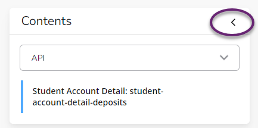 |
Ellucian Ethos SDK
Ethos Integration Error Handling
About the Ethos Integration Errors Service
What is the Errors Service?
The Errors Service resides within Ethos Integration and provides a centralized location where application errors can be logged for a given tenant. Multiple applications for the same tenant can log errors to this service. Errors can be viewed in the Ethos Integration Administrator User Interface (UI). The service supports retrieving errors, posting new errors, and deleting existing errors.
Why use the Errors Service?
The advantage of using the Errors Service is that it consolidates the errors from Ethos Integration applications defined within a given tenant. This provides a single location where errors can be viewed, retrieved, deleted, or added. These errors can come from either the authoritative source application or the non-authoritative source (partner or customer) application which is responsible for producing the error within the given tenant.
What can the Errors Service be used for?
The Errors Service enables disparate applications to manage their errors programmatically. It provides the Errors API for error retrieval, addition, and deletion. Partner or customer applications can leverage the Errors Service to handle errors that occur at runtime, by catching the error and then posting a new error containing additional information to the Error Service for later review and retrieval by other processes.
For example, a partner application might catch an error that occurred at runtime, and then handle that error in such a way where a new error is created. In that new error, additional information can be added further describing the request that produced the error. When that new error is built, the partner application can then POST that new error to the Errors Service. That new error is then available for viewing in the Errors Service Administrative UI, or for retrieval by another process later.
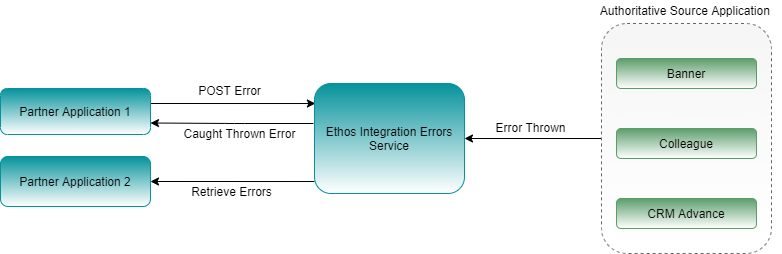
Using the Errors Service
Errors are posted by the authoritative systems to the Ethos Integration Administrator User Interface (UI). Non-authoritative applications can use the Errors Service with the methods listed below. These include the ability to POST, GET, or DELETE errors.
Publishing an error: a participating application can send a POST request to publish a new error.
Errors can be published using the Errors API POST method.
| REST API Specification | Value |
|---|---|
| Method | POST |
| Route | https://integrate.elluciancloud.com/errors |
| Headers | Authorization: Bearer <access token> |
| Payload | An example of the JSON Error schema can be found here. In this example, scroll down to the "Publish an Error-> Error" section. |
| Response | |
| Headers | Content-Type - "application/json" |
| Payload | A JSON response with the id of the published error. { "id": "c68c9931-6665-40f8-8f9a-c5450104f95f" } |
Getting errors: a participating application can send a GET request to retrieve errors reported in their tenant environment.
You can retrieve or view errors using either the Errors Service or the Ethos Integration Administrator UI, where errors raised by authoritative systems are logged. Only authorized users can view the error logs.
- Errors can be retrieved using the Errors API GET method.
- A detailed example of getting errors from the Errors endpoint using an API client can be found here.
- A detailed example of getting errors from the Errors endpoint using the EISDK can be found here.
| REST API Specification | Value |
|---|---|
| Method | GET |
| Route | https://integrate.elluciancloud.com/errors/{id?} https://integrate.elluciancloud.com/errors |
| Headers | Authorization - "Bearer <access token>" Accept -"application/vnd.hedtech.errors.v2+json" |
| Response | |
| Headers | Content-Type - "application/json" x-total-count - number of errors returned (this is not returned for Get by ID calls) |
| Payload | A JSON response with the published errors. An example of the JSON response can be found here. In this example, scroll down to the "Getting Errors->Response" section. |
Deleting errors: a participating application can send a DELETE request to delete errors reported in their tenant environment.
- Errors can be deleted using the Errors API DELETE method.
- A detailed example of deleting errors using the Errors endpoint can be found here.
| REST API Specification | Value |
|---|---|
| Method | DELETE |
| Route | https://integrate.elluciancloud.com/errors/{id?} |
| Headers | Authorization - "Bearer <access token>" |
Using the Errors Service with the Ethos Integration SDK
The Ellucian Ethos Integration Software Development Kit (EISDK) retrieves and logs errors using the Errors Service. Below are some example code snippets from the EISDK showing how to POST and GET errors. There are two implementations of the EISDK: C# and Java. The examples below show both.
Posting an error using the EISDK - C#
public static async Task CreateErrorAsync()
{
EthosErrorsClient errorsClient = GetEthosErrorsClient();
Console.WriteLine( "******* ethosErrorClient.CreateAsync() *******" );
string errorStr = "{" +
" \"id\": \"00000000-0000-0000-0000-000000000000\"," +
" \"dateTime\": \"2022-05-23T03:10:44.827Z\"," +
" \"severity\": \"warning\"," +
" \"responseCode\": 201," +
" \"description\": \"Created Error from SDK T03:10:44.827Z\"," +
" \"details\": \"This is a more info on the info error\"," +
" \"applicationId\": \"00000000-0000-0000-0000-000000000000\"," +
" \"applicationName\": \"Banner\"," +
" \"correlationId\": \"2468UserMade3242134\"," +
" \"resource\": {" +
" \"id\": \"00000000-0000-0000-0000-000000000000\"," +
" \"name\": \"persons\"," +
" \"version\": \"v6\"" +
" }," +
" \"applicationSubtype\": \"EMA\"" +
"}";
try
{
EthosError ethosError = ErrorFactory.CreateErrorFromJson( errorStr );
Console.WriteLine( "CREATING ETHOS ERROR: " + ethosError.ToString() );
EthosResponse errorResponse = await errorsClient.PostAsync( ethosError );
Console.WriteLine( $"Created Ethos Error: {errorResponse.Content}" );
}
catch ( Exception ioe )
{
Console.WriteLine( ioe.Message );
}
}POST error using the EISDK - Java
public void createError() {
System.out.println( "******* ethosErrorClient.create() *******" );
String errorStr = "{" +
" \"id\": \"00000000-0000-0000-0000-000000000000\"," +
" \"dateTime\": \"2020-10-27T03:10:44.827Z\"," +
" \"severity\": \"error\"," +
" \"responseCode\": 500," +
" \"description\": \"Internal Server Error\"," +
" \"details\": \"Testing error service from Java Ethos Integration SDK.\"," +
" \"applicationId\": \"00000000-0000-0000-0000-000000000000\"," +
" \"applicationName\": \"Banner\"," +
" \"correlationId\": \"2468UserMade3242134\"," +
" \"resource\": {" +
" \"id\": \"00000000-0000-0000-0000-000000000000\"," +
" \"name\": \"persons\"," +
" \"version\":\"application/json\"" +
" }," +
" \"applicationSubtype\": \"EMA\"" +
"}";
EthosErrorsClient ethosErrorsClient = getEthosErrorsClient();
try {
// This prints the total error count before adding a new error.
getTotalErrorCount();
EthosError ethosError = ErrorFactory.createErrorFromJson( errorStr );
System.out.println( "CREATING ETHOS ERROR: " +
ethosError.toString());
EthosResponse errorResponse = ethosErrorsClient.post( ethosError );
System.out.println( String.format("Created Ethos Error: %s",
errorResponse.getContent()) );
// This prints the total error count after adding a new error.
getTotalErrorCount();
}
catch( IOException ioe ) {
ioe.printStackTrace();
}
} GET by ID error using the EISDK - C#
public static async Task GetErrorByIdAsync()
{
Console.WriteLine( "******* ethosErrorClient.GetByIdAsync() *******" );
try
{
EthosErrorsClient errorsClient = GetEthosErrorsClient();
string getByIdGUID = "11111111-1111-1111-1111-111111111111";
if ( !string.IsNullOrWhiteSpace( getByIdGUID ) )
{
EthosResponse ethosResponse = await errorsClient.GetByIdAsync(getByIdGUID);
Console.WriteLine( ethosResponse.Content );
}
}
catch ( Exception ioe )
{
Console.WriteLine( ioe.Message );
}
}GET by ID error using the EISDK - Java
public void getErrorById() {
System.out.println( "******* ethosErrorClient.getById() *******" );
String getByIdGUID = "11111111-1111-1111-1111-111111111111";
EthosErrorsClient ethosErrorsClient = getEthosErrorsClient();
try {
EthosResponse ethosResponse = ethosErrorsClient.getById(getByIdGUID );
System.out.println( ethosResponse.getContent() );
} catch( IOException ioe ) {
ioe.printStackTrace();
}
} Handling errors using the EISDK - C#
Below is an example of how an application using the EISDK - C# might handle errors using the Error Service.
public async Task<EthosResponse> PostPersonHoldsAsync()
{
EthosProxyClient proxyClient = BuildEthosProxyClient();
EthosErrorsClient errorClient = BuildEthosErrorsClient();
PersonHolds_V6_0 personHolds = GetPersonHolds();
EthosResponse ethosResponse = null;
try
{
// Execute some code here that could throw an exception.
// Attempt to add a person hold.
ethosResponse = proxyClient.PostAsync<PersonHolds_V6_0>("person-holds", personHolds);
}
catch (Exception e)
{
// Caught an exception, so build an EthosError object for the given error.
var jsonSerSettings = new JsonSerializerSettings()
{
DateFormatString = "yyyy'-'MM'-'dd'T'HH':'mm':'ssK"
};
var reqBody = JsonConvert.SerializeObject(personHolds, jsonSerSettings);
Request request = new Request()
{
Uri = null,
Headers = null,
Payload = reqBody
};
Resource resource = new Resource()
{
Id = null,
Name = "person-holds",
Version = "application/json"
};
EthosError ethosError = new EthosError
{
Id = "00000000-0000-0000-0000-000000000000",
ApplicationName = "myApplication",
Request = request,
Resource = resource,
DateTime = DateTime.Now,
Description = e.Message,
Details = e.StackTrace,
Severity = ethosError.ErrorLevel
};
try
{
// Now POST this error to the Errors Service.
EthosResponse errorResponse = await errorClient.PostAsync(ethosError);
Console.WriteLine($"Created Ethos Error: {errorResponse.Content}");
}
catch (Exception ioe)
{
Console.WriteLine(ioe.Message);
}
}
return ethosResponse;
}Handling errors using the EISDK - Java
Below is an example of how an application using the EISDK - Java might handle errors using the Error Service.
public EthosResponse postPersonHolds() {
EthosProxyClient ethosProxyClient = getEthosProxyClient();
EthosErrorsClient ethosErrorsClient = getEthosErrorsClient();
EthosResponse ethosResponse = null;
EthosRequestConverter ethosRequestConverter = new EthosRequestConverter();
PersonHolds personHolds = getPersonHolds();
try {
// Execute some code here that could throw an exception.
// Attempt to add a person hold.
ethosResponse = ethosProxyClient.post("person-holds", personHolds);
}
catch( IOException ioe ) {
// Caught an exception, so build an EthosError object for the given error.
String requestPayload = null;
try {
requestPayload = ethosRequestConverter.toJsonString(personHolds);
}
catch( JsonProcessingException jpe ) {
jpe.printStackTrace();
}
Request request = new Request(null, null, requestPayload );
Resource resource = new Resource( null, "person-holds", "application/json" );
EthosError ethosError = new EthosError();
ethosError.setId( "00000000-0000-0000-0000-000000000000" );
ethosError.setApplicationName( "myApplication" );
ethosError.setRequest( request );
ethosError.setResource( resource );
ethosError.setDateTime( new Date(Instant.now().toEpochMilli()) );
ethosError.setDescription( ioe.getMessage() );
ethosError.setDetails( ioe.getStackTrace().toString() );
ethosError.setSeverity( EthosError.ERROR );
// Now POST this error to the Errors Service.
EthosResponse errorResponse = ethosErrorsClient.post( ethosError );
System.out.println( String.format("Created Ethos Error: %s", errorResponse.getContent()) );
}
return ethosResponse;
}Error Logging with Ethos Integration
Message Level Severities
The severity (error level) from the Errors API's response payload can be used to recognize the severity level of the given message. Using the severity level, messages can be logged by your system for later review.
Errors are categorized into three levels which are represented through the severity property in the error payload or error logs.
- Severity Level: info
The standard log level indicating that something happened, the application entered a certain state, etc. An info log error is purely informative.
Example info error payload:
{ "id": "e3010e7a-9a2c-41ab-884e-c56e32f47146", "dateTime": "2022-05-24T17:52:01.687Z", "severity": "info", "responseCode": 200, "description": "Person Contact was succesfully updated.", "applicationId": "bc9d36b1-2da7-4e16-af3a-65b3d5c584b9", "request" : { "URI" : "http://some/url/IntegrationApi/api/person-contacts", "headers" : [ "x-forwarded-proto: https", "x-forwarded-port: 443", "host: 21.243.52.1:7001", "x-amzn-trace-id: Root=1-62a8a0bb-0d5b11b541a17bd470f9ae18", "accept: application/vnd.hedtech.integration.v16.1.0+json", "accept-encoding: gzip, deflate,br" ], "payload": "{\"contacts\":[{\"contactAddress\":{\"address\":{\"addressLines\":[\"20789LancasterLane\"],\"place\":{\"country\":{\"code\":\"CA\",\"locality\":\"Clarksville\",\"region\":{\"code\":\"US-PA\",\"title\":\"Pennsylvania\"},\"title\":\"Canada\"}},\"type\":{\"addressType\":\"family\",\"detail\":{\"id\":\"809767e4-807c-4c3d-b6c3-ac7e92f550f3\"}}}},\"name\":{\"firstName\":\"Adamsek\",\"fullName\":\"AdamsekasdmAdams\",\"lastName\":\"Adams\",\"middleName\":\"asdm\"},\"phones\":[{\"number\":\"4123468900\"}],\"priority\":1,\"relationship\":{\"detail\":{\"id\":\"9d176247-bd7b-4730-b44a-b9a860fd3e0d\"},\"type\":\"brother\"},\"types\":[\"emergency\"]}],\"id\":\"3ede0ac0-bc3a-4e7e-ab49-1fb999d26f07\",\"person\":{\"id\":\"488ae70a-6e2c-46ab-b975-97ad5d79c1f3\"}}" }, "resource": { "name": "person-contacts" } } - Severity Level: warning
The log level that indicates that something unexpected happened in the application, a problem, or a situation that might disturb one of the processes. A warning does not mean that the application failed.
Example warning error payload:
{ "id": "ad300a73-a35a-4bc7-85d6-84059c50492b", "dateTime": "2022-05-24T19:07:54.150Z", "severity": "warning", "responseCode": 200, "description": "Your password expires in 7 days.", "applicationId": "bc9d36b1-2da7-4e16-af3a-65b3d5c584b9" }Possible resolution: Notify the users about the password expiration notice.
- Severity Level: error
The log level used when the application hits an issue preventing one or more functions from properly functioning.
Example error payload:
{ "dateTime": "2022-02-14T14:52:43.560Z", "severity": "error", "responseCode": 400, "description": "Error response from proxied request to Banner Integration API. Global.SchemaValidation.Error error message:Errors parsing input JSON.", "details": "default.titles.typeAndValue.required", "applicationId": "0e1d879ed7dc4a27a522f3b479d2e426", "applicationName": "Banner Integration API", "correlationId": "5dc6ba52-3412-4aed-9077-4a84071b4f05", "request": { "URI": "http://some/url/IntegrationApi/api/courses", "headers": [ "x-forwarded-proto: https", "x-forwarded-port: 443", "host: 21.243.52.1:7001", "x-amzn-trace-id: Root=1-62a8a0bb-0d5b11b541a17bd470f9ae18", "accept: application/vnd.hedtech.integration.v16.1.0+json", "accept-encoding: gzip, deflate, br" ], "payload": "{\"academicLevels\":[{\"id\":\"3488acd1-49f8-49fe-ac7e-e9c4350c24e8\"}],\"administrativePeriod\":{\"id\":\"ea927b13-937c-41ba-a24b-c34f397f9230\"},\"billing\":{\"maximum\":20,\"minimum\":3},\"credits\":[{\"creditCategory\":{\"creditType\":\"institution\",\"detail\":{\"id\":\"545aeca7-68b2-40c2-a84c-b1d26aeb468a\"}},\"maximum\":20,\"measure\":\"hour\",\"minimum\":3}],\"gradeSchemes\":[{\"gradeScheme\":{\"id\":\"d5bdcfa2-584a-460b-833d-e50a347c801c\"}},{\"gradeScheme\":{\"id\":\"9d07af35-7713-4176-be0b-abed6ce91db7\"},\"usage\":\"default\"}],\"hours\":[{\"administrativeInstructionalMethod\":{\"id\":\"2606734d-a3e1-4bac-8349-fe99c7e02d75\"},\"interval\":\"week\",\"maximum\":20,\"minimum\":3},{\"administrativeInstructionalMethod\":{\"id\":\"026dd7f9-7384-4e3f-93c0-668dde9ccaa7\"},\"interval\":\"week\",\"maximum\":20,\"minimum\":3}],\"id\":\"842b1e7c-f319-4243-b9c1-768d01583737\",\"instructionalMethodDetails\":[{\"instructionalDeliveryMethod\":{\"id\":\"c2e92b9c-a233-4321-a778-a71ae7fc64e4\"},\"instructionalMethod\":{\"id\":\"ee9aee0c-e48a-4cad-b5e4-7acd4491fce1\"}},{\"instructionalDeliveryMethod\":{\"id\":\"5b771662-e27f-4d10-9da3-d4343df1cad4\"},\"instructionalMethod\":{\"id\":\"7f6cb401-7bb0-4b41-bf8c-c21647839cd7\"}},{\"instructionalDeliveryMethod\":{\"id\":\"d564701d-63d7-4483-ae49-64898057c54f\"},\"instructionalMethod\":{\"id\":\"249c6778-10e4-4a95-b5ab-c0d1b43576c5\"}}],\"number\":\"100\",\"owningInstitutionUnits\":[{\"institutionUnit\":{\"id\":\"b23bb183-7d73-4726-af1b-661510324c88\"},\"ownershipPercentage\":100},{\"institutionUnit\":{\"id\":\"6bc7473d-511b-4874-9057-085256327a28\"},\"ownershipPercentage\":100},{\"institutionUnit\":{\"id\":\"0a8f7486-ed41-4eef-a092-44dd9c9ad2af\"},\"ownershipPercentage\":100}],\"status\":{\"id\":\"97ce9575-6ed2-4134-83e8-4bbe2362f35e\"},\"subject\":{\"id\":\"b06c159b-f0c0-4bd8-9b0d-cc1c8cc4e8fe\"},\"titles\":[{\"type\":{\"id\":\"8a43a307-0a30-484a-9d61-49dd49ee02b7\"}}],\"waitlistMultipleSections\":\"notAllowed\"}" }, "resource": { "name": "courses", "version": "application/vnd.hedtech.integration.v16.1.0+json" } }Possible resolution: Verify and update the payload used in the request to resolve the 400 - Bad Request error.
Error Message Schema
- The error message schema is the data model schema that conveys information about an error caused by, or related to, the request payload, from the recipient system to the requesting system.
- The error message schema can be used to determine the format of error messages received from authoritative source applications. A non-authoritative application can receive errors in one of the Error Response Formats.
- There are two versions of the error response format. Refer to the API documentation on Error Message Schema for information on which error formats are supported.
Version Description Errors Version 1 Version 1 returns an array of errors. The X-Media-Type expected with this format is application/vnd.hedtech.integration.errors.v1+json. Errors Version 2 (latest) Version 2 returns an errors array object. This format is the latest and preferred when an authoritative system is starting to develop error responses. The X-Media-Type expected with this format is application/vnd.hedtech.integration.errors.v2+json.
Error Response Formats
Ellucian APIs adhere to the following directives when the API returns an error in the response body:
| Directive | HTTP Header | Acceptable Values | Value Description |
|---|---|---|---|
| Required | X-Media-Type | application/vnd.hedtech.integration.errors.v1+json or application/vnd.hedtech.integration.errors.v2+json |
The version of the error message format in the response body. |
Error Codes
Business logic related exceptions are associated with HTTP error codes 400 (Bad request) or 409 (Conflict) and always require the payload to be included in the response.
The table lists other error conditions and codes associated with the error codes:
| HTTP Status Code | Ethos Data Model Error Code | Error Description |
|---|---|---|
| 401 | Authentication.Required | Authentication failed or wasn't provided |
| 403 | Access.Denied | Server denied access to the resource |
| 404 | Not.Found | Requested resource doesn't exist on the server |
| 405 | Operation.Not.Permitted | Requested operation not permitted |
| 500 | Internal.Error | Unspecified error on the system that prevented execution of the request |
| 501 | API.Not.Implemented | Requested API not implemented |
Banner
Effective Terms and Banner Business Process APIs
Example: series of individual effective term records
There are complex Banner Student term-based records where the data might remain static for multiple terms. Only one data set is applicable for any given term, but it can be a maintenance burden to create redundant records for each term.
To reduce the effort to maintain the information, some Banner records are stored with an effective term rather than requiring a record be created for each individual term. A new record is inserted only when there is a need to update information as of a new effective term. Course records and learner records are examples where effective term logic will create a series of independent records.
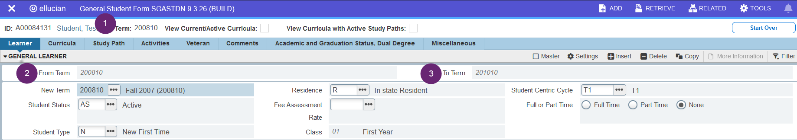
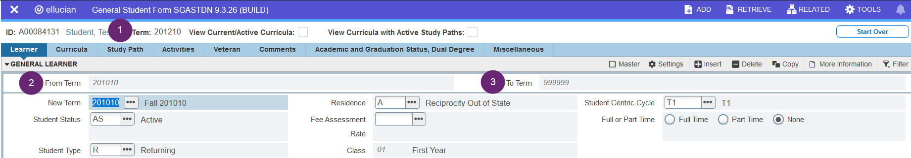
SGBSTDN_TERM_CODE_EFF column represents the from term displayed in the user interface. The to term is not stored on the table. 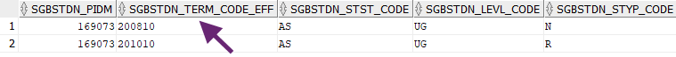
- PUT:
- Update to the 200810 learner record will impact data returned for terms 200810 up to 201010.
- Update to the 201010 learner record will impact data returned for terms 201010 up to 999999.
- POST:
- Creation of a record effective 200910 will not impact the existing 201010 record, however, the insert will result in calculation of a new to term for the 200180 record.
- Creation of a record effective 201510 will result in the calculation of a new to term for the 201010 record.
Example: sets of effective term records
Banner can store a set of term-based records and treat them as a group with a common effective term when the data might remain static for multiple terms. Only one set of records is applicable for any given term, but it can be a maintenance burden to create redundant records for each term.
To reduce the effort to maintain the information, some Banner records are stored as a set with an effective term rather than requiring a record be created for each individual term. A new set of records is inserted only when there is a need to update information as of a new effective term. Student cohort and student attribute records are examples where effective term logic is used with a set of records.
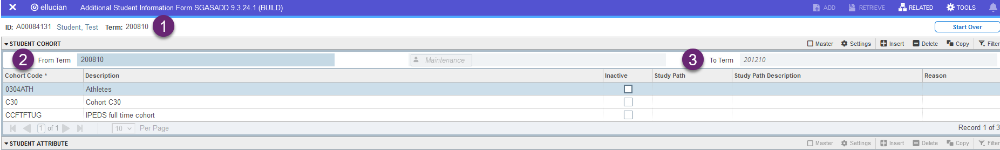
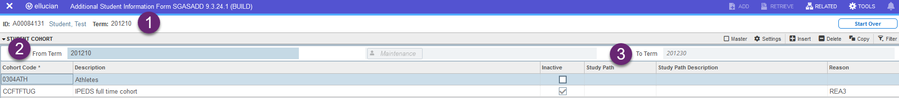
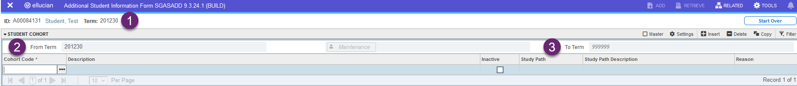
SGRCHRT_TERM_CODE_EFF column represents the from term displayed in the user interface. The to term is not stored on the table. Notice a new effective term record was entered with no cohort codes attached when the cohorts were ended as of term 201230.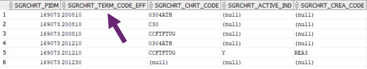
- PUT:
- Updates to the 200810 cohort record set will impact data returned for terms 200810 up to 201210.
- Updates to the 201210 cohort record set will impact data returned for terms 201210 up to 201230.
- POST:
- Creation of a cohort record effective 200910 will not impact the existing 201210 records, however, the insert will result in calculation of a new to term for all 200180 records.
- Creation of a cohort record effective 201510 will result in the calculation of a new to term for the 201230 record.